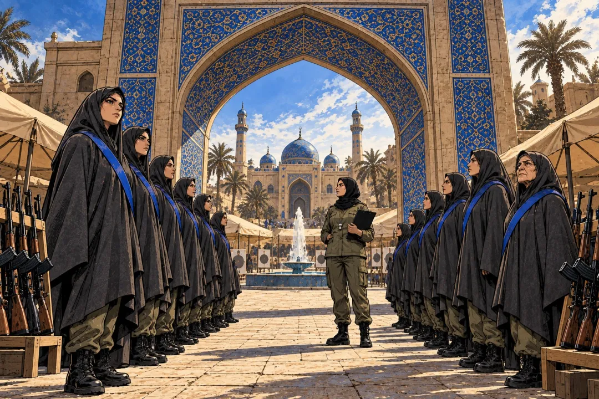

10월 4일, 테헤란 이맘 호세인 광장에 여성 군사훈련장이 생겼다는 기사를 읽었음. 차도르를 두른 여성들이 줄을 서서 칼라시니코프 소총 쏘는 법을 배우고, 줄에 매달려 건너는 훈련까지 했다고 함.
이란이 내건 말은 "국가 방위에 남녀 구분은 없다"였음. 미국이 쳐들어올 때를 대비한다는 거임.
근데 이 장면은 이란 국영 매체가 찍은 사진과 영상으로 알려진 거라, 이란이 보여주고 싶은 모습이 먼저 나온 거라고 생각함.

좋아요 11
댓글 1
리포스트 1
공유 0